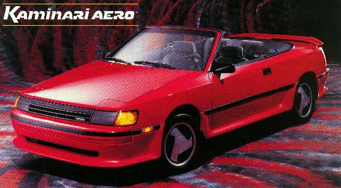
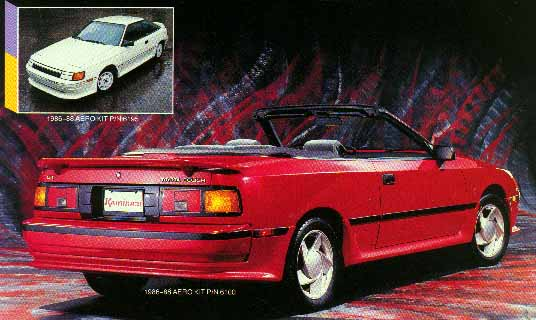

Accentuating the original flowing body lines, Kaminari's crisp, sleek Aero kits are now available for Toyota Celicas from 1984 through 1988. As pictured the 1986-88 Celica Aero kit includes a wrap around front air dam, side skirts, a wrap around rear skirt, and the rear whale tail.